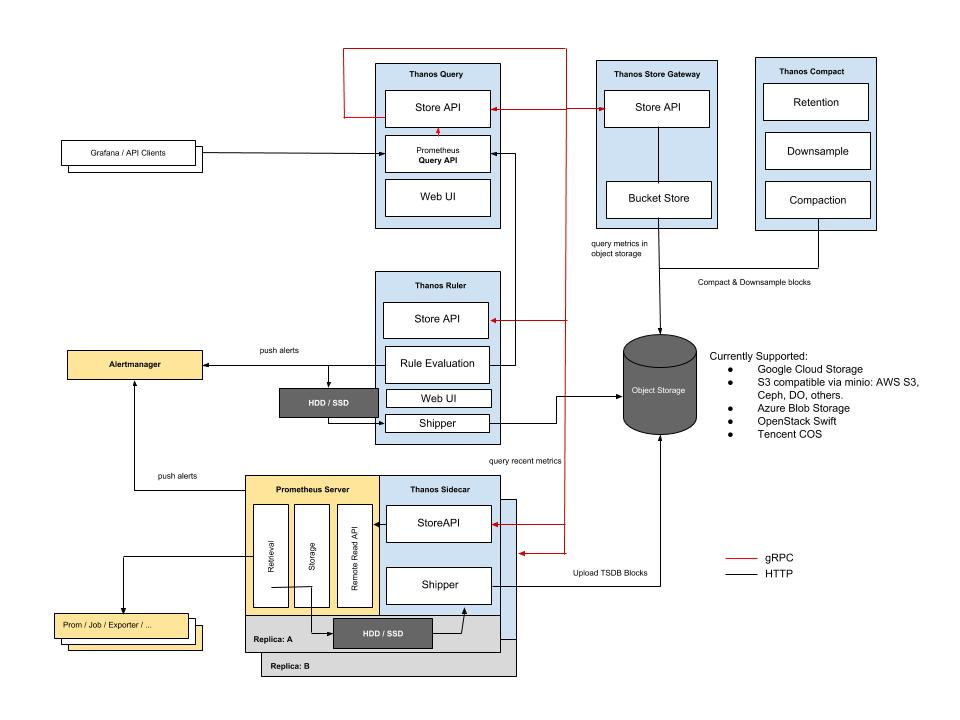
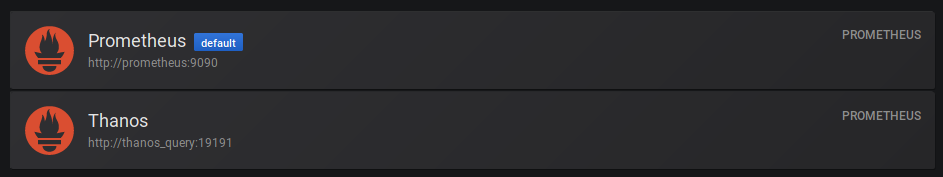

Running Thanos without Kubernetes
If you’ve been around the cloud-native world for a while, you’ll no doubt be familiar with (and quite likely already be using) Prometheus. You may however not have heard of Thanos. Put simply, Thanos takes Prometheus and makes it even more awesome.
In their own words, the high-level description of Thanos is the following:
Thanos is a set of components that can be composed into a highly available metric system with unlimited storage capacity, which can be added seamlessly on top of existing Prometheus deployments.
What does this solve?
When you start increasing the amount of metrics you’re gathering, you soon find that the disk space consumed shoots up. The obvious solution to this is to decrease your retention period in Prometheus, however what if you need to retain a longer time period than you have space for? Enter Thanos.
What does Thanos do?
Thanos has three main goals:
- Global query view of metrics.
- Unlimited retention of metrics.
- High availability of components, including Prometheus.
Of these, the ‘unlimited’ metric retention is probably the most eye-catching (it definitely is for me). It should be noted that the ‘unlimited’ retention period is theoretically limited at some point by your storage provider’s own capacity, but if you’re using one of the major players in cloudland then you may as well have unlimited storage.
Thanos achieves the massive retention period by transferring all ingested metrics out to your object storage provider of choice, therefore once Prometheus deletes them they still exist elsewhere. The really clever part comes from the query layer of Thanos - you can query your metrics regardless of whether they’re on disk or in a bucket, and you’ll never know the difference. Thanos presents a Prometheus-compatible API which you set as your Grafana datasource, and the magic just happens under the hood whilst you use Grafana (or any other external dashboard/tool).
So what are we doing here?
Thanos will work anywhere there’s a Prometheus server, however the usual scenario is to place them on top of Kubernetes. There may, however, be occasions when you really don’t need to use Kubernetes (I know, shocking that I may even suggest this given my love for it!), but the documentation is a little on the sparse side for these circumstances. I’ve pulled out the relevant parts and de-Kubernetes(ed) them in order to run them on a single Docker daemon; the remainder of this article is about my setup and an attempt at explaining it for anyone else who may be interested.
Architecture
Without duplicating too much of the docs, this is the architecture when the various components are all deployed:

There are a lot of components, however we won’t be needing all of them and the complexity is futher reduced as there isn’t any HA involved. The following config examples are going to be Ansible tasks (as that’s my deployment tool of choice), however these should be easy enough to understand if you have a working knowledge of Docker.
A couple of things to note:
- The Thanos binary provides the all the relevant components so you only need a single binary (or container).
- Docker container name resolution does not work on the default network, so I’ve created a separate network for my metrics stack.
Sidecar
The sidecar process runs alongside the Prometheus server and ships new metrics off to your object storage bucket:
- name: thanos sidecar
docker_container:
name: thanos_sidecar
image: improbable/thanos:v0.3.2
pull: true
state: started
restart_policy: unless-stopped
command: "sidecar --prometheus.url=http://prometheus:9090 --tsdb.path=/prometheus --objstore.config-file=/thanos/bucket_config.yml --cluster.disable --grpc-address=0.0.0.0:10901 --http-address=0.0.0.0:19191"
volumes:
- /srv/docker/thanos/bucket_config.yml:/thanos/bucket_config.yml
- /srv/docker/prometheus/data:/prometheus
networks:
- name: prometheus
- The
--prometheus-urlflag tells the sidecar where to direct queries to for on-disk metrics (see the note above about container name resolution). - Thanos needs access to Prometheus’s metrics in order to ship them so I’ve provided that dir as a volume and it’s accessible via the tsdb path.
- The object storage config file is pretty simple and documented here.
--cluster.disableturns off the gossip comms as we’re making this fairly static.- The
--grpc-addressport is used by the query component to access the on-disk metrics via the sidecar (it doesn’t talk to Prometheus directly).
Store gateway
The store gateway provides a queryable interface to the remotely-stored metrics:
- name: thanos gateway
docker_container:
name: thanos_gateway
image: improbable/thanos:v0.3.2
pull: true
state: started
restart_policy: unless-stopped
command: "store --data-dir=/thanos/store --objstore.config-file=/thanos/bucket_config.yml --http-address=0.0.0.0:19191 --grpc-address=0.0.0.0:10901"
volumes:
- /srv/docker/thanos/bucket_config.yml:/thanos/bucket_config.yml
- /srv/docker/thanos/store:/thanos/store
networks:
- name: prometheus
- The
--data-dirlocation is used to cache metrics on disk to improve lookup times. --grpc-addressis again provided to the query component to enable metric retrieval from the object storage bucket.
Querier
The query component provides the interface you’ll talk to from Grafana:
- name: thanos query
docker_container:
name: thanos_query
image: improbable/thanos:v0.3.2
pull: true
state: started
restart_policy: unless-stopped
command: "query --http-address 0.0.0.0:19191 --store thanos_sidecar:10901 --store thanos_gateway:10901"
published_ports:
- "{{ hostvars['server.domain.com']['ansible_zt5u46yx73']['ipv4']['address'] }}:19191:19191"
networks:
- name: prometheus
- In a static configuration, the
--storeflag can be passed multiple times to provide access to the on-disk and bucket-stored metrics. - The query component presents a Prometheus-like GUI to allow you to run PromQL commands. Like Prometheus, this interface has NO access control, so don’t expose it externally. I make mine available over a ZeroTier network.
Compactor
Finally, the compactor will decrease the resolution of the metrics in your object storage bucket:
- name: thanos compactor
docker_container:
name: thanos_compactor
image: improbable/thanos:v0.3.2
pull: true
state: started
restart_policy: unless-stopped
command: "compact --data-dir /thanos/compact --objstore.config-file=/thanos/bucket_config.yml --http-address 0.0.0.0:19191 --wait --retention.resolution-raw=14d --retention.resolution-5m=30d --retention.resolution-1h=90d"
volumes:
- /srv/docker/thanos/bucket_config.yml:/thanos/bucket_config.yml
networks:
- name: prometheus
- The data dir is used to cache metrics whilst the compaction occurs.
--waitis important as otherwise the process exits after a run (which doesn’t play well with Docker).- The retention resolution options define how long Thanos will retain metrics at that resolution for.
Verification
With all that in place, if you check the logs of the querier you should see the following:
level=info ts=2019-03-11T22:11:47.356269269Z caller=storeset.go:250 component=storeset msg="adding new store to query storeset" address=thanos_gateway:10901
level=info ts=2019-03-11T22:11:47.356646661Z caller=storeset.go:250 component=storeset msg="adding new store to query storeset" address=thanos_sidecar:10901
This shows that we are able to query both local and remote metrics via the sidecar/gateway components.
If we perform a listing on the object storage then we should see files in the bucket:
$ rclone lsd store:thanos
0 2019-03-12 08:19:31 -1 01D5HQ5G5XKZZFNE72QCFYBXD0
0 2019-03-12 08:19:31 -1 01D5ND0WTKKA4GYSXZ2EBMK6QC
0 2019-03-12 08:19:31 -1 01D5ND162JYNAQQC3H9HP5QC93
0 2019-03-12 08:19:31 -1 01D5P8FPB7KTDCS5ZXHDW1YP41
0 2019-03-12 08:19:31 -1 01D5Q3YKFRKYHYZARZWZ8CDN9N
0 2019-03-12 08:19:31 -1 01D5QXFC6ZK5BJ6DD1JYKQ23TV
0 2019-03-12 08:19:31 -1 01D5QZDG9DBF79ZF1DWATSJCTZ
0 2019-03-12 08:19:31 -1 01D5R4B3F0H83W1B585NP1WAZF
0 2019-03-12 08:19:31 -1 01D5RB6TPZJMJV9VMZC0TAGXVG
0 2019-03-12 08:19:31 -1 debug
Success!
Grafana
Lastly, you should be able to point your Grafana datasource to http://thanos_query:19191 and see your new improved metrics stack:
